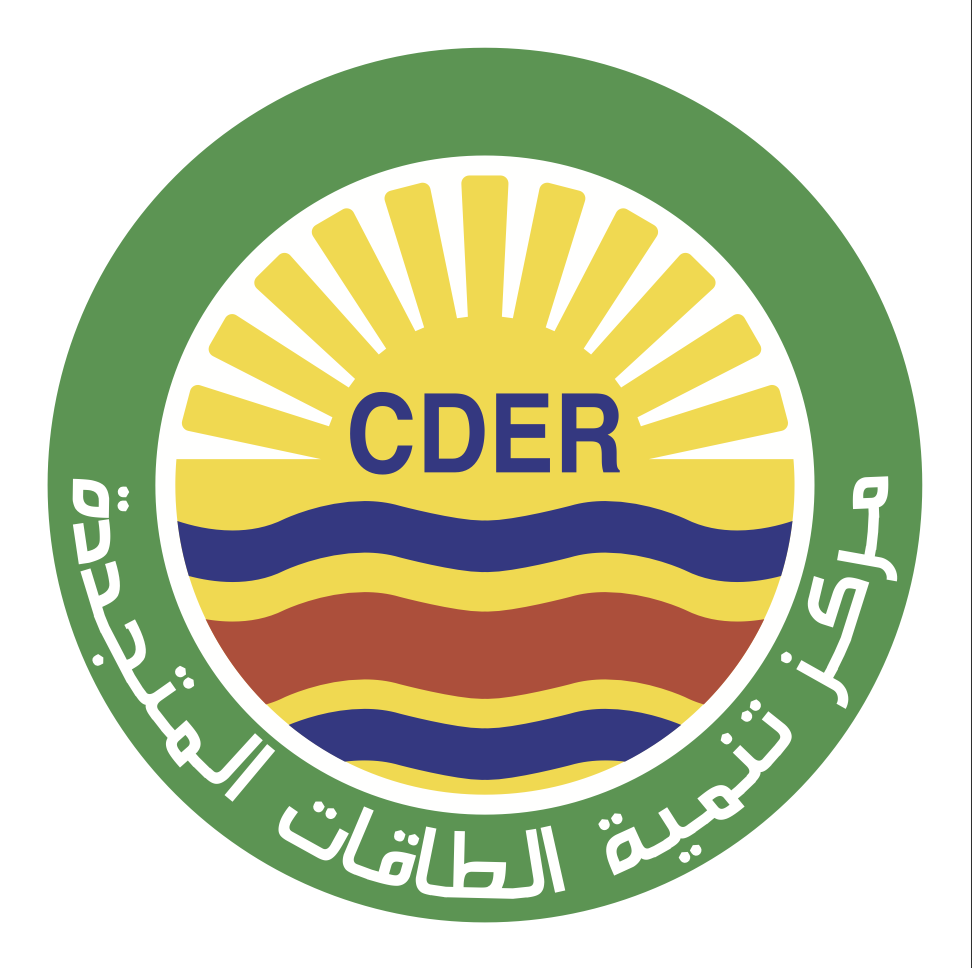
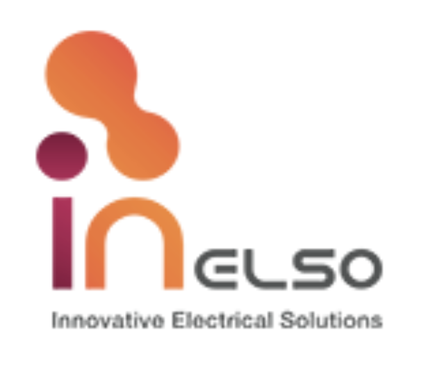
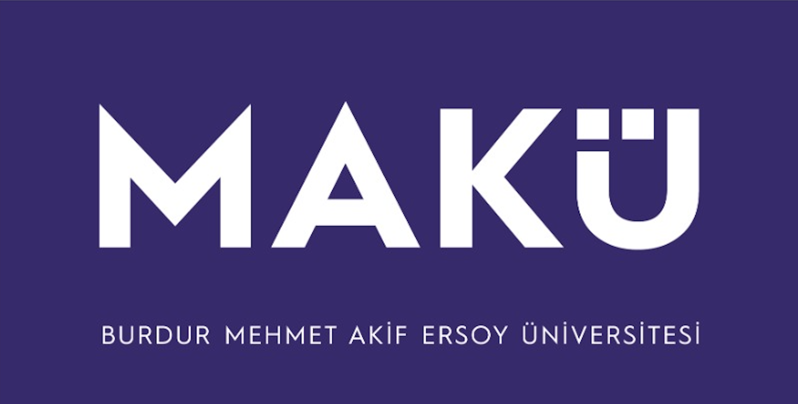
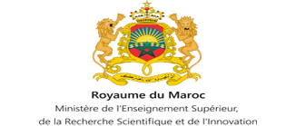
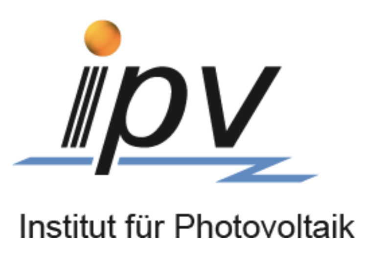
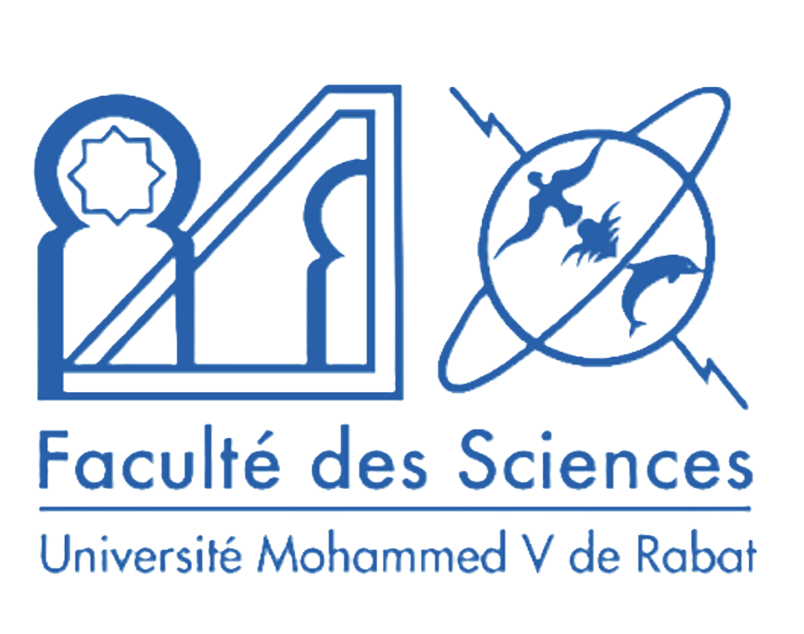
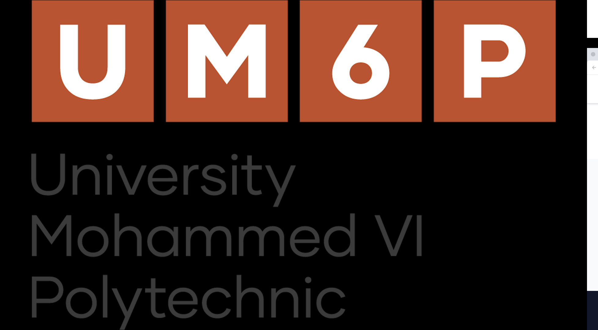
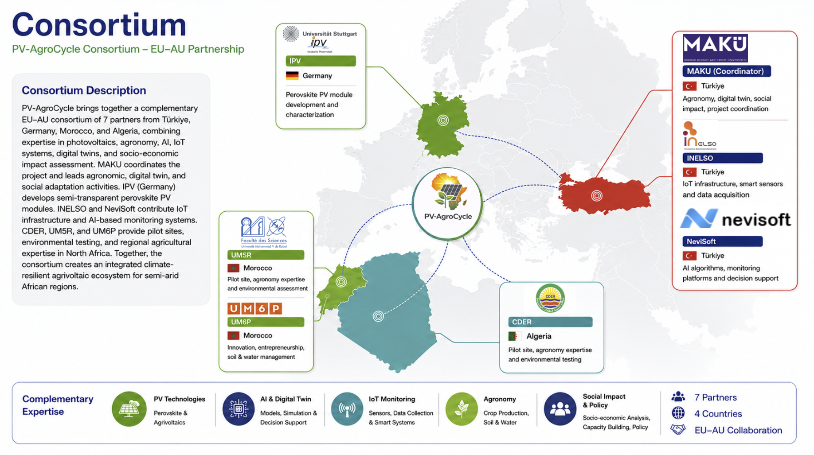

PV-AgroCycle is an innovative Agrivoltaic (Agriculture-Solar Energy) project developed to combat the challenges posed by climate change in semi-arid and arid regions. Instead of competing for land use, our project aims to create synergy in the Energy-Water-Food nexus by combining solar energy generation with agricultural production under the same roof. This initiative, conducted in collaboration with the European Union and the African Union, aims to produce clean energy while increasing agricultural productivity in high-irradiance regions.
PV-AgroCycle is dedicated to building a sustainable ecosystem based on high water efficiency and food security, resilient to climate change, by combining the energy and agriculture sectors through advanced technology.
With our innovative semi-transparent perovskite modules, we aim to produce high-quality solar energy while optimizing the light transmission necessary for plant growth on the same land. This ensures a holistic increase in efficiency in energy and agricultural production by maximizing the use of limited resources.
We reduce external dependency in agriculture through rainwater harvesting infrastructure and plasma-based eco-friendly fertilization technologies. This resource-preserving model represents a growth strategy that offers both economic prosperity and ecological sustainability for future generations.
By transferring real-time data from pilot sites to our Digital Twin platform, we simulate crop yield and energy performance with a margin of error below 10%. These scientific insights enable farmers and policymakers to make the most accurate decisions based on evidence.
Through co-design workshops conducted with local farmers, cooperatives, and women's associations, we maximize the social acceptance of the technology. With our knowledge transfer and training activities, we ensure the confident and active participation of rural communities in this technological transformation.
Explore how Pv_AgroCycle is making an impact through various real-world scenarios.
In our pilot regions, Morocco and Algeria, traditional open-field agriculture (T1) is practiced to fully measure the impact of agrivoltaic systems. This scenario allows us to monitor plant growth under natural climate conditions without any shading or technological intervention, scientifically proving the yield increase provided by our system.
In our second application scenario (T2), standard, opaque solar panels are installed over agricultural lands. In this "classic" agrivoltaic model, the balance between energy production and agricultural productivity is examined by analyzing the shading effect of the panels on plant growth and microclimate changes.
In this scenario (T3), which is the heart of our project, custom-developed semi-transparent modules with ≥30% light transmittance are used. This advanced technology provides maximum resource efficiency by ensuring plants receive the light they need for photosynthesis, while simultaneously being supported by AI-controlled irrigation, plasma-based fertilization, and digital twin simulations.
Our project is being executed through the collaboration of distinguished institutions from Turkey, Germany, Morocco, and Algeria.







